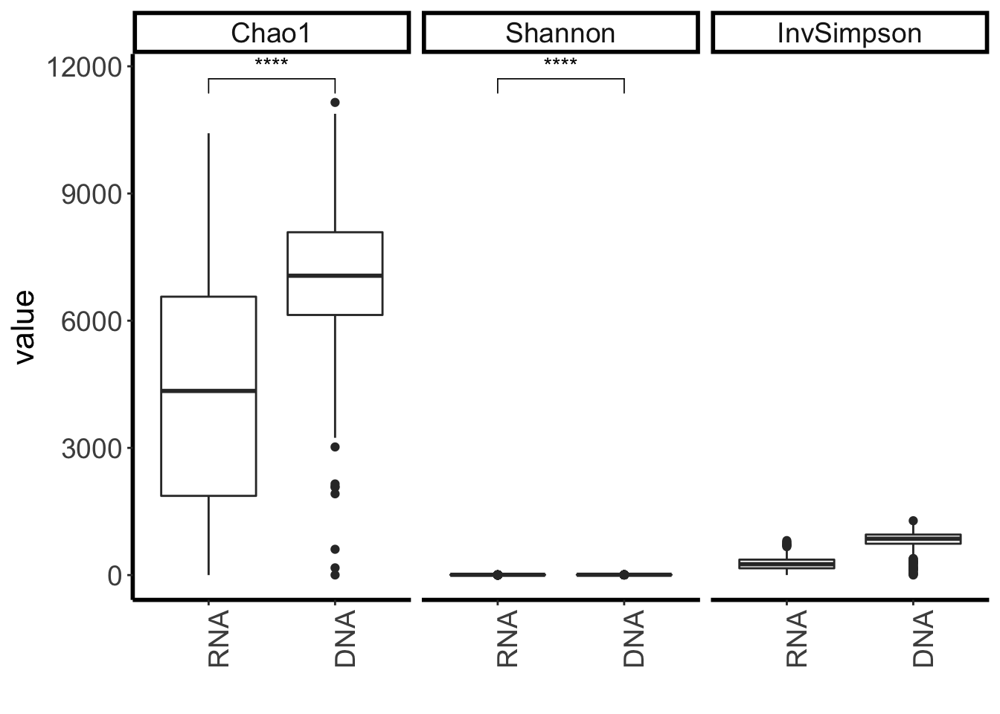

we have had analyzed the 16s rDNA sequencing to study how the planting years of Miscanthus and N fertilization rates affect the bacterial microbial community in associated soil, which you could find in CABBI_16s_rDNA. We have also extracted RNA from the same-sampled soils, preserved by LifeGuard. Based on the previous studies and my analysis with 16s rDNA NGS sequencing, we hypothesized that planting years of Miscanthus and N fertilization rates will be the largest variances to drive the active microbial community too. Meanwhile, we are aiming to find:
Loading libraries
library(phyloseq)
library(phylosmith)
library(dada2)
library(plyr)
library(ggplot2)
library(vegan)
library(reshape2)
library(ggpubr)
library(DESeq2)
library(biomformat)
library(openxlsx)Generate phyloseq objects from the OTU table and taxonomy table generated from DADA2, 16s rRNA data.
otu_rrna_16s <- readRDS("data/seq_table.RDS")
tax_rrna_16s <- readRDS("data/tax_table.RDS")
metadata <- read.csv(file="data/metadata_cabbi_rrna_16s.csv")
colnames(otu_rrna_16s) <- metadata$Samples
phylo.rrna <- phyloseq(otu_table(otu_rrna_16s, taxa_are_rows=TRUE), tax_table(tax_rrna_16s))
rownames(metadata) <- metadata$Sample
sample_data(phylo.rrna) <- metadata
phylo.rrna## phyloseq-class experiment-level object
## otu_table() OTU Table: [ 39353 taxa and 481 samples ]
## sample_data() Sample Data: [ 481 samples by 10 sample variables ]
## tax_table() Taxonomy Table: [ 39353 taxa by 6 taxonomic ranks ]head(sample_data(phylo.rrna))## Samples
## 2001_C_2018_N300_P3_A_20180429_RNA_CABBI 2001_C_2018_N300_P3_A_20180429_RNA_CABBI
## 2002_C_2018_N300_P3_B_20180429_RNA_CABBI 2002_C_2018_N300_P3_B_20180429_RNA_CABBI
## 2003_C_2018_N300_P3_C_20180429_RNA_CABBI 2003_C_2018_N300_P3_C_20180429_RNA_CABBI
## 2004_C_2018_N0_P4_A_20180429_RNA_CABBI 2004_C_2018_N0_P4_A_20180429_RNA_CABBI
## 2005_C_2018_N0_P4_B_20180429_RNA_CABBI 2005_C_2018_N0_P4_B_20180429_RNA_CABBI
## 2006_C_2018_N0_P4_C_20180429_RNA_CABBI 2006_C_2018_N0_P4_C_20180429_RNA_CABBI
## Plant Year Plot Nitrogen Days
## 2001_C_2018_N300_P3_A_20180429_RNA_CABBI Corn 2018 3 300 -10
## 2002_C_2018_N300_P3_B_20180429_RNA_CABBI Corn 2018 3 300 -10
## 2003_C_2018_N300_P3_C_20180429_RNA_CABBI Corn 2018 3 300 -10
## 2004_C_2018_N0_P4_A_20180429_RNA_CABBI Corn 2018 4 0 -10
## 2005_C_2018_N0_P4_B_20180429_RNA_CABBI Corn 2018 4 0 -10
## 2006_C_2018_N0_P4_C_20180429_RNA_CABBI Corn 2018 4 0 -10
## Soil fertilizer
## 2001_C_2018_N300_P3_A_20180429_RNA_CABBI Rizosphere no
## 2002_C_2018_N300_P3_B_20180429_RNA_CABBI Rizosphere no
## 2003_C_2018_N300_P3_C_20180429_RNA_CABBI Rizosphere no
## 2004_C_2018_N0_P4_A_20180429_RNA_CABBI Rizosphere no
## 2005_C_2018_N0_P4_B_20180429_RNA_CABBI Rizosphere no
## 2006_C_2018_N0_P4_C_20180429_RNA_CABBI Rizosphere no
## Type Nucelic
## 2001_C_2018_N300_P3_A_20180429_RNA_CABBI 2018_300_-10 RNA
## 2002_C_2018_N300_P3_B_20180429_RNA_CABBI 2018_300_-10 RNA
## 2003_C_2018_N300_P3_C_20180429_RNA_CABBI 2018_300_-10 RNA
## 2004_C_2018_N0_P4_A_20180429_RNA_CABBI 2018_0_-10 RNA
## 2005_C_2018_N0_P4_B_20180429_RNA_CABBI 2018_0_-10 RNA
## 2006_C_2018_N0_P4_C_20180429_RNA_CABBI 2018_0_-10 RNAAlso Read the otu table and taxonomy table of 16s rDNA from the same samples by DADA2
otu_cabbi <- readRDS("data/seq_table_16srDNA.RDS")
tax_cabbi <- readRDS("data/tax_table_16srDNA.RDS")
ps <- phyloseq(otu_table(otu_cabbi, taxa_are_rows=TRUE), tax_table(tax_cabbi))
metadata.rdna<-read.csv(file="data/meatadata_cabbi_rDNA_481.csv")
rownames(metadata.rdna)<- metadata.rdna$Samples
sample_data(ps)<- metadata.rdna
ps## phyloseq-class experiment-level object
## otu_table() OTU Table: [ 56045 taxa and 481 samples ]
## sample_data() Sample Data: [ 481 samples by 11 sample variables ]
## tax_table() Taxonomy Table: [ 56045 taxa by 6 taxonomic ranks ]head(sample_data(ps))## Samples
## 2001_C_2018_P3_N300_A_20180429_CABBI 2001_C_2018_P3_N300_A_20180429_CABBI
## 2002_C_2018_P3_N300_B_20180429_CABBI 2002_C_2018_P3_N300_B_20180429_CABBI
## 2003_C_2018_P3_N300_C_20180429_CABBI 2003_C_2018_P3_N300_C_20180429_CABBI
## 2004_C_2018_P4_N0_A_20180429_CABBI 2004_C_2018_P4_N0_A_20180429_CABBI
## 2005_C_2018_P4_N0_B_20180429_CABBI 2005_C_2018_P4_N0_B_20180429_CABBI
## 2006_C_2018_P4_N0_C_20180429_CABBI 2006_C_2018_P4_N0_C_20180429_CABBI
## Plant Year Plot Nitrogen Days
## 2001_C_2018_P3_N300_A_20180429_CABBI Corn 2018 3 300 -10
## 2002_C_2018_P3_N300_B_20180429_CABBI Corn 2018 3 300 -10
## 2003_C_2018_P3_N300_C_20180429_CABBI Corn 2018 3 300 -10
## 2004_C_2018_P4_N0_A_20180429_CABBI Corn 2018 4 0 -10
## 2005_C_2018_P4_N0_B_20180429_CABBI Corn 2018 4 0 -10
## 2006_C_2018_P4_N0_C_20180429_CABBI Corn 2018 4 0 -10
## Soil fertilizer Type
## 2001_C_2018_P3_N300_A_20180429_CABBI Rizosphere no 2018_300_-10
## 2002_C_2018_P3_N300_B_20180429_CABBI Rizosphere no 2018_300_-10
## 2003_C_2018_P3_N300_C_20180429_CABBI Rizosphere no 2018_300_-10
## 2004_C_2018_P4_N0_A_20180429_CABBI Rizosphere no 2018_0_-10
## 2005_C_2018_P4_N0_B_20180429_CABBI Rizosphere no 2018_0_-10
## 2006_C_2018_P4_N0_C_20180429_CABBI Rizosphere no 2018_0_-10
## Comparing Nucelic
## 2001_C_2018_P3_N300_A_20180429_CABBI 3 DNA
## 2002_C_2018_P3_N300_B_20180429_CABBI 3 DNA
## 2003_C_2018_P3_N300_C_20180429_CABBI 3 DNA
## 2004_C_2018_P4_N0_A_20180429_CABBI 3 DNA
## 2005_C_2018_P4_N0_B_20180429_CABBI 3 DNA
## 2006_C_2018_P4_N0_C_20180429_CABBI 3 DNAAs you could see for the name of samples in DNA and RNA, the N#_P# are swapted. so i will make the order of these names are the same To swapt the name order in 16s rRNA sequencing
sample_names_s <- vector()
for(name in rownames(metadata)){
begin <- strsplit(name, '_')[[1]][1:3]
end <- strsplit(name, '_')[[1]][6:9]
check <- strsplit(name, '_')[[1]][4:5]
if(strsplit(check[1], '')[[1]][1] == 'N'){
check <- check[c(2,1)]
}
sample <- paste(c(begin, check, end), sep = '_', collapse = '_')
sample_names_s <- rbind(sample_names_s, sample)
}
sample_names(phylo.rrna) <- sample_names_s
head(sample_data(phylo.rrna))## Samples
## 2001_C_2018_P3_N300_A_20180429_RNA_CABBI 2001_C_2018_N300_P3_A_20180429_RNA_CABBI
## 2002_C_2018_P3_N300_B_20180429_RNA_CABBI 2002_C_2018_N300_P3_B_20180429_RNA_CABBI
## 2003_C_2018_P3_N300_C_20180429_RNA_CABBI 2003_C_2018_N300_P3_C_20180429_RNA_CABBI
## 2004_C_2018_P4_N0_A_20180429_RNA_CABBI 2004_C_2018_N0_P4_A_20180429_RNA_CABBI
## 2005_C_2018_P4_N0_B_20180429_RNA_CABBI 2005_C_2018_N0_P4_B_20180429_RNA_CABBI
## 2006_C_2018_P4_N0_C_20180429_RNA_CABBI 2006_C_2018_N0_P4_C_20180429_RNA_CABBI
## Plant Year Plot Nitrogen Days
## 2001_C_2018_P3_N300_A_20180429_RNA_CABBI Corn 2018 3 300 -10
## 2002_C_2018_P3_N300_B_20180429_RNA_CABBI Corn 2018 3 300 -10
## 2003_C_2018_P3_N300_C_20180429_RNA_CABBI Corn 2018 3 300 -10
## 2004_C_2018_P4_N0_A_20180429_RNA_CABBI Corn 2018 4 0 -10
## 2005_C_2018_P4_N0_B_20180429_RNA_CABBI Corn 2018 4 0 -10
## 2006_C_2018_P4_N0_C_20180429_RNA_CABBI Corn 2018 4 0 -10
## Soil fertilizer
## 2001_C_2018_P3_N300_A_20180429_RNA_CABBI Rizosphere no
## 2002_C_2018_P3_N300_B_20180429_RNA_CABBI Rizosphere no
## 2003_C_2018_P3_N300_C_20180429_RNA_CABBI Rizosphere no
## 2004_C_2018_P4_N0_A_20180429_RNA_CABBI Rizosphere no
## 2005_C_2018_P4_N0_B_20180429_RNA_CABBI Rizosphere no
## 2006_C_2018_P4_N0_C_20180429_RNA_CABBI Rizosphere no
## Type Nucelic
## 2001_C_2018_P3_N300_A_20180429_RNA_CABBI 2018_300_-10 RNA
## 2002_C_2018_P3_N300_B_20180429_RNA_CABBI 2018_300_-10 RNA
## 2003_C_2018_P3_N300_C_20180429_RNA_CABBI 2018_300_-10 RNA
## 2004_C_2018_P4_N0_A_20180429_RNA_CABBI 2018_0_-10 RNA
## 2005_C_2018_P4_N0_B_20180429_RNA_CABBI 2018_0_-10 RNA
## 2006_C_2018_P4_N0_C_20180429_RNA_CABBI 2018_0_-10 RNANow the order of names in 16s rRNA and names in 16s rDNA are the same.
First check the heatmap of phylo.rrna
heatmap.rrna <- phylosmith::abundance_heatmap(phylo.rrna, classification = 'Phylum', treatment = c('Year'), transformation = 'log10', colors = 'default')Combine the two phyloseq objects together
merged.phylo <- merge_phyloseq(phylo.rrna, ps)
merged.phylo.1 <- prune_species(speciesSums(merged.phylo)>1, merged.phylo)
saveRDS(merged.phylo.1, file="data/merged_DNA_RNA_phyloseq.rds")
merged.phylo.1 <-readRDS(file="data/merged_DNA_RNA_phyloseq.rds")
merged.phylo.1## phyloseq-class experiment-level object
## otu_table() OTU Table: [ 63153 taxa and 962 samples ]
## sample_data() Sample Data: [ 962 samples by 11 sample variables ]
## tax_table() Taxonomy Table: [ 63153 taxa by 6 taxonomic ranks ]richness <- estimate_richness(merged.phylo.1, measures=c("Observed", "InvSimpson", "Shannon", "Chao1"))
sam <- sample_data(merged.phylo.1)
sa <- data.frame(rownames(sam), sam$Year, sam$Nitrogen, sam$Days, sam$Nucelic)
rownames(richness) = gsub(pattern="X*", replacement="", x=rownames(richness))
merged <- merge(richness, sa, by.x= "row.names", by.y="rownames.sam.")
merged.melt <- melt(merged, id.vars=c("Row.names","sam.Nucelic"), measure.vars=c("Chao1","Shannon","InvSimpson"))
alpha.merged <- ggplot(merged.melt, aes(x=sam.Nucelic,y=value))+geom_boxplot()+facet_grid(~variable)+
theme(axis.text.x = element_text(angle = 90, size=14),
axis.text.y = element_text(size=14),
axis.title.y = element_text(angle=90),
panel.background=element_rect(fill="white", colour="white"),
axis.title = element_text(size = 16),
legend.text = element_text(size=14),
legend.title=element_text(size=16),
axis.line = element_line(colour = "black", size = 1, linetype = "solid"),
strip.background = element_rect(colour = "black", fill = "white",size=2, linetype="solid"),
strip.text=element_text(size=14))+
xlab("")
compa <- list(c("RNA","DNA"))
alpha.merged.pvalue<- alpha.merged +stat_compare_means(comparisons = compa, label="p.signif", method="t.test")#+ #add pairwise comparisons p-value
#stat_compare_means(label.y=4, method = "anova")
ggsave(alpha.merged.pvalue, file="figures/alpha_diversity_merged_two_phylo.pdf", units="in", width=6, height=6)
alpha.merged.pvalue The alpha diversity is significanlty higher associated with 16s rDNA sequencing, which makes sense, indicating the whole community has more species than the active communities.
So, what are different? Let me take a look of the first 10 most abundant phyla associated with rDNA /rRNA Rarefying
set.seed(100)
merged.phylo.1.rare <- rarefy_even_depth(merged.phylo.1, sample.size=5000, rngseed=TRUE)## `set.seed(TRUE)` was used to initialize repeatable random subsampling.## Please record this for your records so others can reproduce.## Try `set.seed(TRUE); .Random.seed` for the full vector## ...## 72 samples removedbecause they contained fewer reads than `sample.size`.## Up to first five removed samples are:## 2004_C_2018_P4_N0_A_20180429_RNA_CABBI2010_C_2018_P6_N300_A_20180429_RNA_CABBI2025_C_2018_P14_N0_A_20180429_RNA_CABBI2058_M_2016_P18_N200_A_20180429_RNA_CABBI2062_M_2016_P19_N0_B_20180429_RNA_CABBI ## ...## 5968OTUs were removed because they are no longer
## present in any sample after random subsampling## ...# removed 72 samples.merged.relative <- transform_sample_counts(merged.phylo.1.rare, function(x) x/sum(x))
merged.relative.glom <- tax_glom(merged.relative, taxrank="Phylum")
Top10phylum.merged.glom = names(sort(taxa_sums(merged.relative.glom), decreasing=T))[1:10]
Top10phylum.merged.phylo <- prune_taxa(Top10phylum.merged.glom,merged.relative.glom)